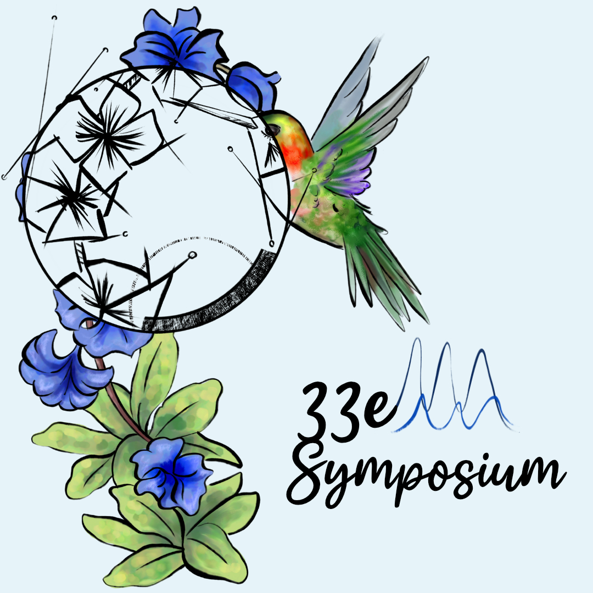
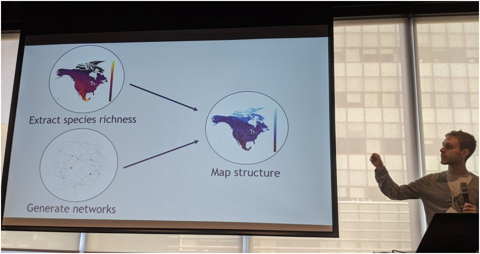
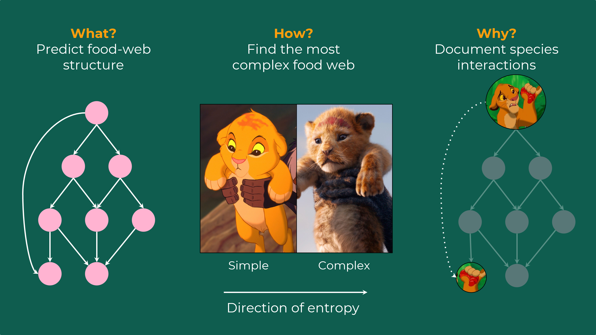

Organized sessions
2. Complexity matters: subjectivity as practice in contemporary biology
Leroux, E., Mélançon, V., Banville, F., Brémaud, J., Robitaille, F., & Gholamhosseini, M. (2023, March 16-17)
33rd Biology Symposium of the University of Montreal, Montreal, Qc, Canada
event

1. Space Oddity: Thinking about ecological networks across space
Dansereau, G., Banville, F., & Strydom, T. (2022, August 14-19)
ESA & CSEE Joint Meeting (Inspire session), Montreal, Qc, Canada
event, inspire session, Space Oddity
Contributed talks
8. Quoi, quand et où manger ? À la découverte des interactions trophiques entre contraintes et incertitudes
Banville, F., Gravel, D., & Poisot, T. (2024, March 21-22)
34th Biology Symposium of the University of Montreal, Montreal, Qc, Canada
event, slides
7. Quoi, quand et où manger ? À la découverte des interactions trophiques entre contraintes et incertitudes
Banville, F., Gravel, D., & Poisot, T. (2024, February 19-21)
2024 QCBS Symposium, Montreal, Qc, Canada
event, slides
5. What constrains food webs? A maximum entropy model for predicting their structure with minimal biases
Banville, F., Gravel, D., & Poisot, T. (2022, August 14-19)
2022 Annual Meeting of the Ecological Society of America (ESA), Montreal, Qc, Canada
event, slides
4. Food webs of maximum entropy: A story of ecology and stochasticity
Banville, F., Gravel, D., & Poisot, T. (2022, March 25)
32nd Biology Symposium of the University of Montreal, Montreal, Qc, Canada
event, slides
3. Predicting networks of species interactions
Banville, F., Gravel, D., & Poisot, T. (2020, October 22)
IVADO Digital October 2020, virtual
event, slides, video
2. How to estimate network structure without interaction data
Banville, F., MacDonald, A., Gravel, D., & Poisot, T. (2020, February 19)
Extreme Climate Events Symposium 2020, Toronto, On, Canada
event, slides
1. How to estimate network structure without data
Banville, F., MacDonald, A., Gravel, D., & Poisot, T. (2019, December 18-20)
10th Annual QCBS Symposium, Montreal, Qc, Canada
event, slides

Lightning talks
4. Interactions entre espèces : une histoire d’écologie et de hasard
Banville, F., Gravel, D., & Poisot, T. (2022, March 29)
My IVADO research project in 180 seconds, Montreal, Qc, Canada
event, slides, video

3. Predicting food webs across space: First estimates of food-web structure derived from species richness
Banville, F., Gravel, D., & Poisot, T. (2021, October 28)
IVADO Digital October 2021, virtual
event, video
2. Trophic-METE: A parsimonious theory of food-web structure
Banville, F., Gravel, D. & Poisot, T. (2020, December 14-16)
11th Annual QCBS Symposium, virtual
event, slides
1. Analyzing species interaction networks in Julia
Banville, F., Vissault, S., Bélisle, Z., Hoebeke, L., Stock, M., Szefer, P., & Poisot, T. (2020, July 29-31)
Juliacon 2020, virtual
event, slides, video
Mangal.jl, EcologicalNetworks.jl, EcologicalNetworksPlots.jl
Mangal.jl, EcologicalNetworks.jl and EcologicalNetworksPlots.jl) to analyze and visualize species interaction networks in Julia. I’m still dreaming about Lisbon’s beaches to this day.Posters
2. Given limited knowledge, what can we say about a food web’s properties?
Banville, F., Gravel, D. & Poisot, T. (2021, December 8-10)
12th Annual QCBS Symposium, virtual
event, poster
1. Trophic-METE: A parsimonious theory of food-web structure
Banville, F., Gravel, D. & Poisot, T. (2020, December 14-16)
11th Annual QCBS Symposium, virtual
event, poster

6. Comment les réseaux de prédateurs et de proies sont-ils structurés dans les milieux naturels?
Banville, F., Gravel, D., & Poisot, T. (2023, May 8-12)
90e congrès de l’ACFAS, Montreal, Qc, Canada
event, slides, video